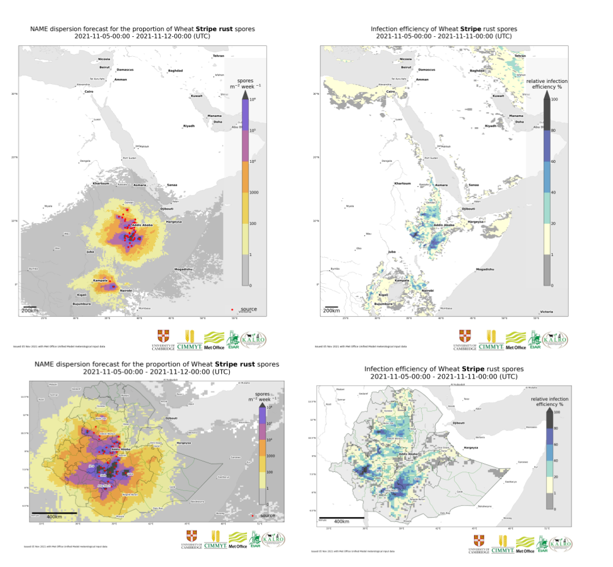

Wheat Rust Early Warning System
Location: Asia & East africa

A daily, near real-time week long forecast of the spread of stem (Puccinia graminis), stripe (Puccinia striiformis), and leaf (Puccinia triticina). Read more.
Wheat rust diseases are caused by airborne fungal spores and pose a major threat to food security all over the globe, especially in countries in East Africa and South Asia. New emerging strains of the disease present an intensifying risk of severe crop loss.
As a result of the relentless efforts of many collaborating organisations (University of Cambridge, Met Office, CIMMYT, EIAR and ATA), an Early Warning System has been established to provide a daily near-real time weeklong forecast of the spread of stem (Puccinia graminis), stripe (Puccinia striiformis), and leaf (Puccinia triticina) rust in Ethiopia. The system has recently been extended to include Kenya in East Africa and Nepal and Bangladesh in South Asia (the latter in collaboration with CIMMYT-Bangladesh, NARC, BWMRI, DHM, DAE, and EMBRAPA).
Here is the schematic summary of the EWS components (see further details in Allen-Sader et al. 2019):
The modelling involves a combination of meteorological and epidemiological models with additional inputs from in-country surveillance coordinated by CIMMYT. The team in Cambridge is responsible for the development and maintenance of the modelling elements of the EWS, including the adaptation of a particle dispersal model (NAME) originally developed by the UK Met Office for rust spores. The UK Met Office also provides seven-day weather forecasts for the target countries to drive the models, giving farmers a three-week window to apply fungicides to prevent rust epidemics. The models are also being used pre-season to assess risks from new races of wheat rust and to inform the selection of crop varieties likely to confer resistance.
 Example deposition (left column) and environmental suitability (right column) outputs of the model for the East Africa domain (upper row) and for the Ethiopia subdomain (lower row). Movie below includes the Epidemiological Model outputs for the Ethiopia subdomain.
Recent publications and presentations:
Prof. Chris Gilligan’s presentation from the BGRI-2021 Workshop:
Dr. Tamas Mona’s presentation from the BGRI-2021 Workshop:
Project members
- Dr Jake Smith
- Dr Tamas Mona
- Lawrence Bower
- Dr Rich Stutt
Funders:
This work is funded by The Bill and Melinda Gates Foundation and UK Foreign, Commonwealth & Development Office for East African part of the project and by the UK Foreign, Commonwealth & Development Office for South Asian, as part of the umbrella project: Asia Regional Resilience to a Changing Climate (ARRCC)).